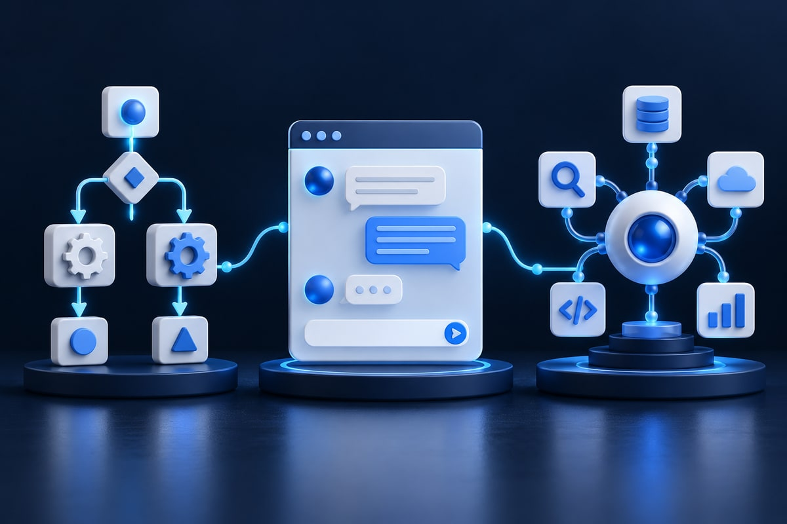

AI systems
AI Agents vs Chatbots vs Automation: What’s the Difference in 2026?
Three implementation patterns, where they overlap, and how to choose the least complex option that reliably solves the actual problem.

Quick answer: Traditional automation follows predefined rules. An AI chatbot focuses on communicating with users. An AI agent can use a model and approved tools to pursue a task through multiple steps. These categories overlap: a chatbot can be the interface for an agent, and an agent may invoke ordinary automation.
Businesses hear bold claims about agentic AI, autonomous assistants and workflow automation. Before choosing a tool or hiring a developer, it helps to understand what each approach does and where human oversight is still essential.
What is an AI agent?
An AI agent is an application that uses an AI model to work toward a goal and interact with information or tools. It can select a tool, inspect the result and decide what to do next within defined constraints.
An agent supporting a development team might read a bug report, search a repository, propose a fix and run approved tests before presenting changes for review. It is not inherently safe or accurate; the surrounding application must control data access, actions and approvals.
What is an AI chatbot?
A chatbot is a conversational interface. Some use predefined dialogue flows; others use language models and retrieval. An advanced chatbot may call tools and act as the front end for an agent. The difference is in the underlying responsibilities and permissions, not the appearance of the chat bubble.
What is traditional workflow automation?
Traditional automation uses explicit triggers and rules, such as creating a CRM lead and notifying sales when a form is submitted. No language model is required. It is often more predictable and easier to audit when all important conditions can be defined in advance.
AI agents vs chatbots vs automation
| Capability | Rules-based automation | AI chatbot | AI agent |
|---|---|---|---|
| Primary role | Follow a defined process | Exchange information | Pursue tasks using decisions and tools |
| Typical trigger | Event or schedule | User message | User or system request |
| Natural language | Optional | Common | Common |
| Multi-step decisions | Predetermined branches | Sometimes | Often |
| External tools | Preconfigured | Optional | Common |
| Human approvals | Based on workflow risk | Based on use case | Important for consequential actions |
Customer service example
Automation: a contact form submits a ticket and emails a reference number.
Chatbot: a visitor asks about opening hours or a published return policy.
Agent: a signed-in customer asks about an order. The agent retrieves authorised details and prepares a resolution. Modifying an address, initiating a refund or changing account details requires appropriate validation and permission.
The strongest design may combine all three: conversation for the interface, an agent for flexible information gathering and rule-based systems for critical transactions.
Software development example
Automation: continuous integration runs tests after each commit.
Chatbot: a developer asks why a test fails and receives an explanation.
Agent: a coding tool investigates files, proposes a patch, runs permitted tests and returns a diff for review.
Lead-management example
Automation: an enquiry is added to the CRM and tagged by form source.
Chatbot: a visitor describes a project and receives an explanation of relevant services.
Agent: an assistant extracts requirements, compares them with a service catalogue, drafts a brief and proposes follow-up steps. Human approval before outreach reduces mistakes and reputational risk.
How does an AI agent work?
- A model interprets the task and suggests decisions or tool calls.
- Instructions define goals and boundaries.
- Tools or APIs provide narrow, approved capabilities.
- Workflow state records completed steps and available information.
- Permissions and approvals determine what the agent may actually do.
- Observability uses logs, traces and tests to evaluate results.
The OpenAI Agents SDK documentation describes ways to organise tools and handoffs. Framework choices should follow the application’s needs, not novelty.
Should your business choose an agent, chatbot or automation?
Is the work predictable?
If a clear trigger always leads to a well-defined action, use ordinary automation unless AI adds measurable value.
Is the problem primarily answering questions?
If customers mainly need help finding information, a well-designed chatbot connected to approved content may be sufficient.
Does the task require interpreting inputs and choosing tools?
If the application must handle variable instructions, retrieve relevant information and coordinate several authorised steps, an agent may be appropriate.
Start small. Prototype with a limited dataset and evaluate whether AI improves accuracy, speed or user experience after oversight costs are included.
Security risks of AI agents
Systems that can act create risks including incorrect tool use, prompt injection, inappropriate access, unintended account changes and excessive spending.
- Use least-privilege access to APIs and data.
- Enforce tool-level authorisation outside the model.
- Require human approval for high-impact operations.
- Validate and limit tool inputs.
- Use privacy-appropriate logging and monitoring.
- Test red-team scenarios and graceful failures.
See the OWASP LLM Top 10 and NIST AI Risk Management Framework.
Data privacy for the US, UK and Canada
An agent with customer-record access may process personal information under different legal regimes. UK organisations should review UK GDPR guidance; Canadian organisations should consider federal privacy guidance; US organisations must assess relevant state, federal and sector-specific rules. Data minimisation, permission checks and deletion practices matter as much as written policies.
Frequently asked questions
Are AI agents smarter than chatbots?
Not necessarily. They may use similar models. Agents generally have more responsibility for choosing tools and completing multi-step tasks.
Can I build an AI agent with Python or JavaScript?
Yes. Choose according to the application architecture, security requirements and team experience.
Can an AI agent run without humans?
Some low-risk processes can be highly automated. High-impact activities should have explicit controls and human review where appropriate.
Are AI agents always more expensive than chatbots?
No, but repeated model calls, integrations, monitoring and approvals can increase cost. Measure the complete workflow.
What does agentic AI mean?
It describes systems that pursue tasks through multi-step reasoning, tool use or workflow execution.
Final thoughts
Traditional automation, conversational AI and AI agents are complementary building blocks. Choose the least complex solution that reliably solves the problem and increase autonomy only when the benefits justify added risk and maintenance.
Read how to build a website AI chatbot and how much AI app development costs.
Sources and further reading
Use rules for predictable work, conversation for information exchange and carefully controlled agents for variable multi-step tasks.